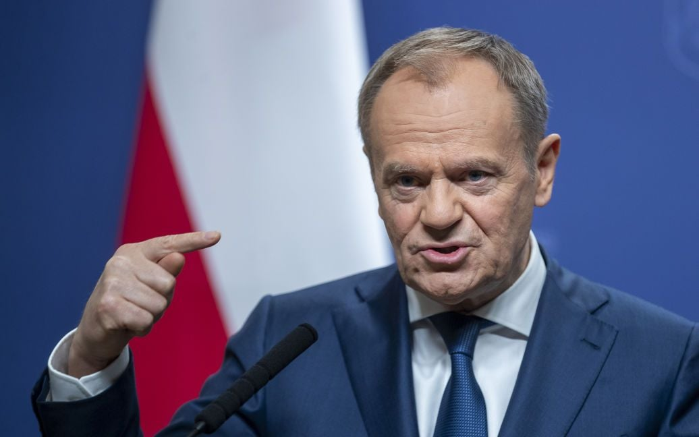

Прем'єр-міністр Польщі зазначив, що необхідно відбудувати архітектурні пам'ятки, пошкоджені російськими ракетами.
У Польщі готові долучитися до відбудови архітектурних історичних пам'яток, які було пошкоджено внаслідок ракетного удару росіян по місту Львів.
Про це заявив прем'єр-міністр Польщі Дональд Туск у дописі на своїй сторінці у соціальній мережі X.
Джерело: ТСН
"циферки" 3 543 5475